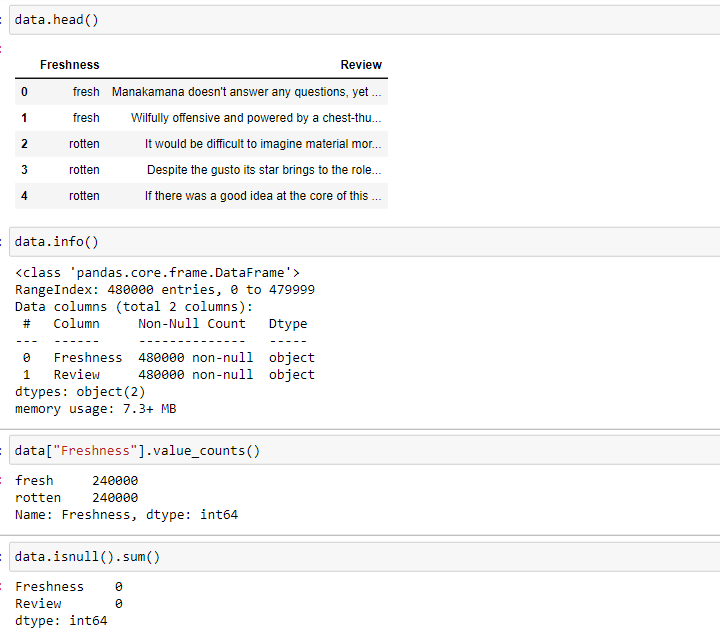

Image Classifier
We will use the test data set of rotten tomato review https://www.kaggle.com/datasets/ulrikthygepedersen/rotten-tomatoes-reviews In machine learning algorithms, naïve bayes classification is a straight forward and powerful algorithm for classification task. Here I implementing the naïve bayes classification using python. Here, I build an naïve bayes classifier to predicting whether the review is rotten or fresh.
Naïve Bayes Algorithm:
It is a classification technique based on bayes theorem with an independence assumption among predictors. Naïve Bayes classification is based on applying Bayes theorem with strong independence assumption between the features. Naïve Bayes classification produces good results when we use it for textual data analysis such as Natural Language Processing.Naïve Bayes classifier applies the Bayes’ theorem in practice. This classifier brings the power of Bayes’ theorem to machine learning.
Naïve Bayes algorithm intuition:
Naïve bayes classifier uses the bayes theorem to predict the membership probabilities of each class such as probability of given data belongs to a particular class. The class with highest probability will considered as most likely class. Here, naïve bayes classifier assumes that all the features are unrelated to each other. Presence or absence of a feature will not effect or influence the presence or absence of any another feature. In real world datasets, we test a hypothesis given multiple evidence on features. So, the calculations become quite complicated.
Types of Naïve Bayes Algorithm:
Gaussian Naïve Bayes algorithm:
When we have continuous attribute values, we made an assumption that the values associated with each class are distributed according to Gaussian or Normal distribution
Multinomial Naïve Bayes algorithm:
Multinomial Naïve Bayes model, samples represent the frequencies with which certain events have been generated by a multinomial where pi is the probability that event i occurs. Multinomial Naïve Bayes algorithm is preferred to use on data that is multinomially distributed. It is used in text categorization classification.
Bernoulli Naïve Bayes algorithm:
This model is also popular for document classification tasks where binary term occurrence features are used rather than term frequencies. The applications of the naïve bayes algorithm is the text classification and sentiment analysis.
Import Libraries
The first step will be importing the libraries which are the basic libraries such as numpy, pandas and re. These are the most important things for any machine learning model.
Import dataset
We need to import the data set using the read_csv function. where it will helps us to load the csv files

Exploratory data analysis
To better understand of the data. We use some functions such as info(),value_counts(), isnull() and head(). Which will helps to understand the dataset in a better way
Encoding
In this stage we are going to remove the unwanted data. It is a process of removing the commoner morphological and inflexional endings from words in English. We need to perform this before we are going to build a model. Here we remove the stop_words, other than alphabets and numbers to perform a model.
Splitting data into train, development and test Merge the dataset into one. And divide the dataset as train, development and test.

Build a vocabulary as list. Where i omitted rare words for example if the occurrence is less than five times. Then I dropped that words and also performed the reverse index as the key value
Calculating the probablility of occurrence of each word
Calculating the Conditional probability based on the sentiment
Comparing the effect of smoothing on the Conditional probability based on the sentiment
Calculating the accuracy using development dataset
Comparing the effect of smoothing.where with the effect of smoothing we got the accuracy 0f 79.59% and without smoothing we got the accuracy 79.47%

Displaying the Top 10 words that predicts each class

Calculating the accuracy of the test data based on the optimal parameters we obtained while performing the development dataset. The accuracy on the test data set is 79.59%
challenges
The main challenge, I was faced at Encoding. So, Where we need to remove the unwanted data from the text to get the better data to perform the our model. It took me some time to get better understand of the data to performing model encoding.
Reference
- https://vitalflux.com/quick-introduction-smoothing-techniques-language-models/